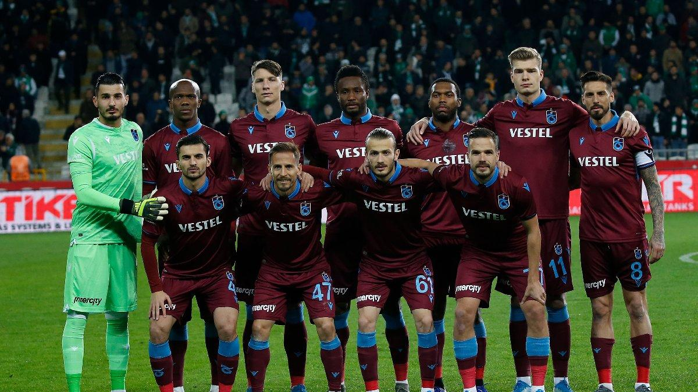
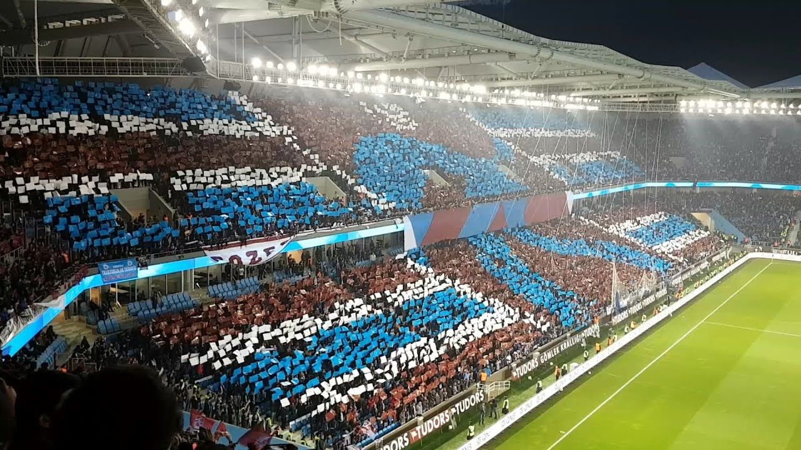
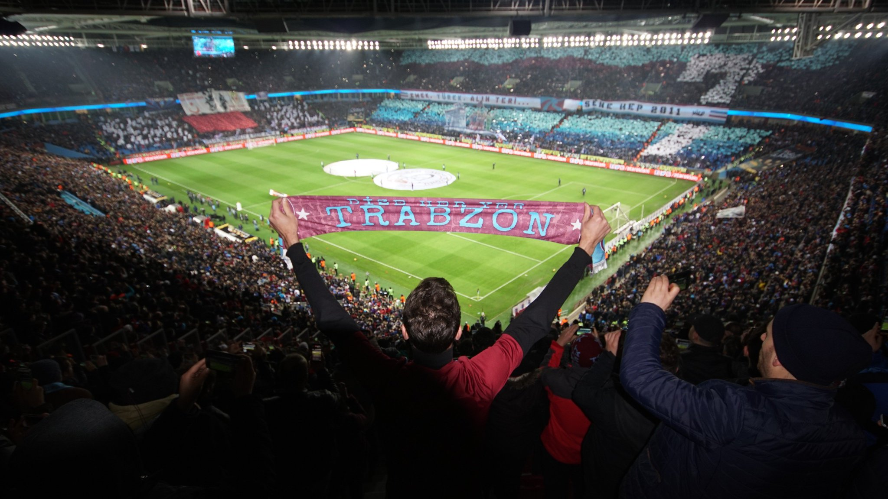

Karadeniz Fırtınası, 1975-1985 yılları arasında toplamda 6 lig
şampiyonluğu, 6 Cumhurbaşkanlığı Kupası, 3 Türkiye Kupası ve 3
Başbakanlık Kupası’nı müzesine götürmeyi başardı. 1980’li yılların
ortalarından itibaren gerek kulüp içinde gerek Türk futbolunda
yaşanan gelişmeler Bordo-Mavililer’i şampiyonluktan 2010-11 yılına
kadar alıkoydu belki; ama Trabzonspor zirveye oynamaktan asla
vazgeçmedi. Müzesindeki Türkiye Kupası sayısını 8’e;
Cumhurbaşkanlığı Kupası’nı 7’ye; Başbakanlık Kupası’nı 5’e
çıkarmasını bildi. Tarihinde ilk defa 2009-2010 sezonunda TFF Süper
Kupa’yı kazanmanın onurunu yaşadı. 15 Eylül 1976 günü Akranes
galibiyeti ile başlayan Avrupa serüveninde Liverpool, Aston Villa,
Inter, Barcelona ve Olimpik Lyon gibi unutulmaz zaferlere imza attı.

Trabzonspor, 50 yıllık mazisi boyunca kimi zaman dramatik
kaybedişlerin kimi zaman sarsıcı başarı ve unutulmaz galibiyetlerin
takımı oldu. Ama her dönem ve koşulda bir spor kulübünden çok daha
fazla şeyi temsil ediyordu. Kemençeden tuluma, horondan kolbastıya,
hamsisi, şivesi ve hırçın doğasıyla Karadeniz’e dair pek çok
folklorik ve kültürel sembolün taşıyıcısı ve ulusal düzeyde
sergilendiği zemindi Trabzonspor. Bu, şüphesiz ki onu diğer
kulüplerden ayıran en belirleyici özelliklerden biriydi. Diğeri mi?
Umudun, inanç, mücadele ve sevdanın takımı olması…

Trabzonspor
taraftarları başarı gibi başarısızlığın da kalıcı olmadığını iyi
biliyor. Kulüp yönetimi, benimsediği “yeniden yapılanma ve yükseliş”
anlayışına Bordo-Mavili taraftarları da ortak etmeyi başardı.
Sezonun ikinci devresinde yeni stadyumla beraber yakalanan pozitif
ivme, kulübün kuruluşunun 50. yılını kutladığı bugünlerde gelecek
için ümit veriyor. Taraftar ve kulüp arasında sağlanan dayanışma ve
duygu ortaklığı ise, “Karadeniz Fırtınası”nın sadece sportif değil;
toplumsal, kültürel ve ekonomik potansiyelini gerçekleştirme
konusunda da yardımcı olacağa benziyor.
